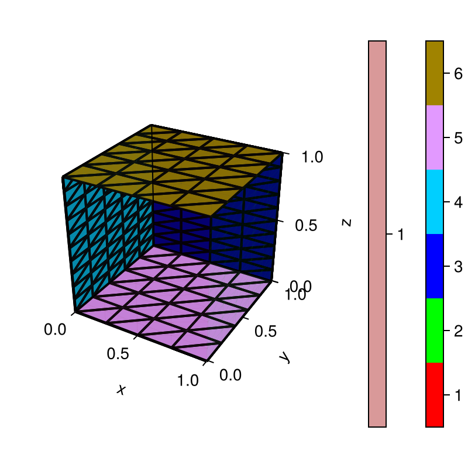
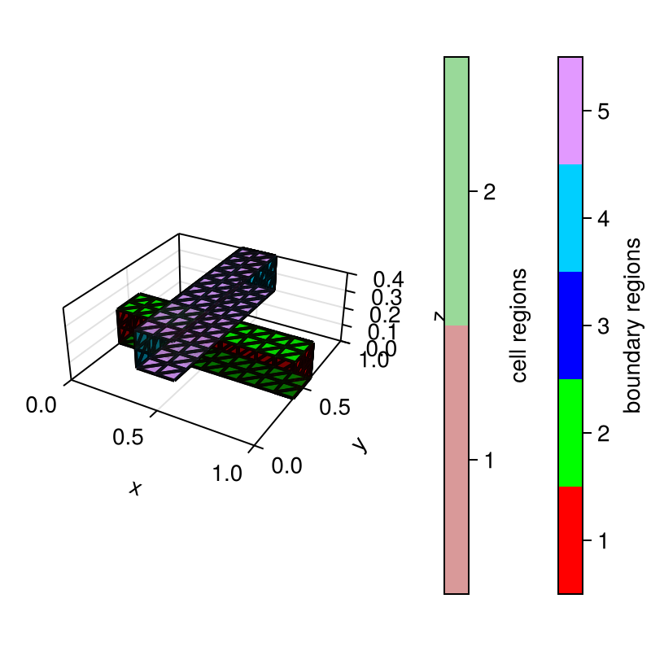

3D Grid examples
using ExtendableGridsQuadrilateral
function quadrilateral(; hx = 0.25, hy = 0.2, hz = 0.1) X = collect(0:hx:1) Y = collect(0:hy:1) Z = collect(0:hz:1) return simplexgrid(X, Y, Z)end
Cross3d
function cross3d() X = collect(0:0.1:1) Y = collect(0:0.1:1) Z = collect(0:0.1:1) grid = simplexgrid(X, Y, Z) rect!(grid, (0, 0.4, 0), (1, 0.6, 0.2); region = 2, bregions = [1, 1, 1, 1, 2, 3]) rect!(grid, (0.4, 0, 0.2), (0.6, 1, 0.4); region = 2, bregions = [4, 4, 4, 4, (cur) -> cur == 3 ? 0 : 5, 6]) return subgrid(grid, [2])end
CI callbacks for ExampleJuggler.jl
Unit tests
function mask_bedges() grid = quadrilateral(; hx = 0.25, hy = 0.25, hz = 0.25) bedgemask!(grid, [0.0, 0.0, 0.0], [0.0, 0.0, 1.0], 1) bedgemask!(grid, [0.0, 0.0, 0.0], [0.0, 1.0, 0.0], 2) bedgemask!(grid, [0.0, 1.0, 0.0], [0.0, 1.0, 1.0], 3) bedgemask!(grid, [0.0, 0.0, 1.0], [0.0, 1.0, 1.0], 4) bedgemask!(grid, [0.0, 1.0, 0.0], [0.0, 0.0, 1.0], 5) return trueendusing Testfunction runtests() @test isconsistent(quadrilateral()) @test isconsistent(cross3d()) @test numbers_match(quadrilateral(), 330, 1200, 440) @test mask_bedges() @test numbers_match(cross3d(), 189, 480, 344) return nothingendPlot generation
using GridVisualizefunction generateplots(picdir; Plotter = nothing) if isdefined(Plotter, :Makie) size = (400, 400) Plotter.save(joinpath(picdir, "quadrilateral.png"), gridplot(quadrilateral(); Plotter, size)) Plotter.save(joinpath(picdir, "cross3d.png"), gridplot(cross3d(); Plotter, size)) end return nothingendThis page was generated using Literate.jl.